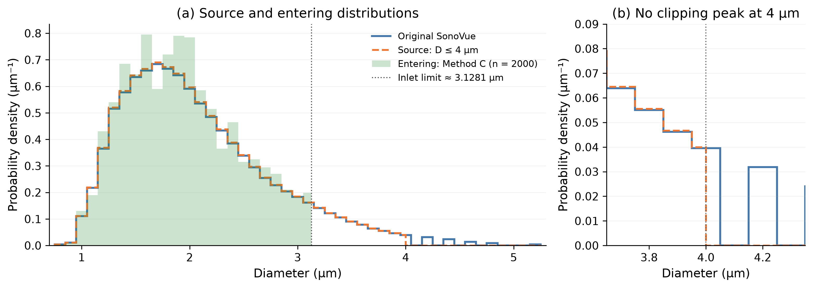
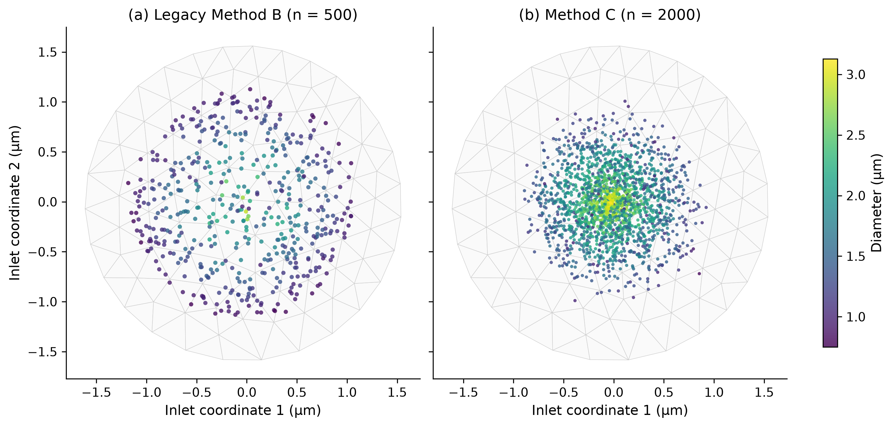
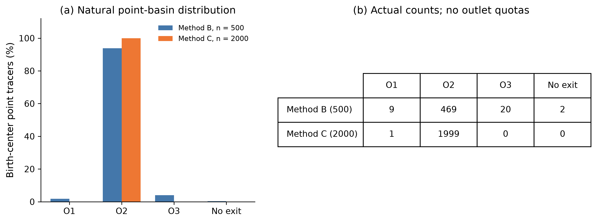
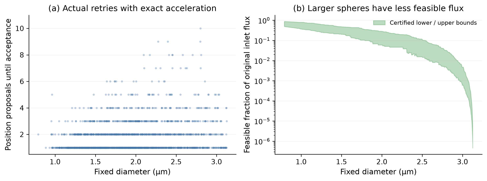
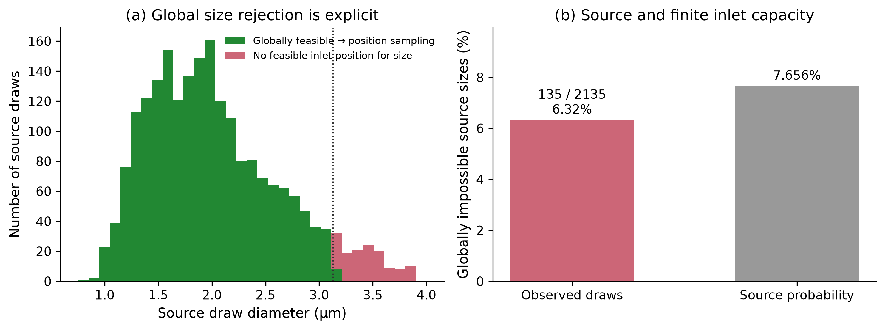
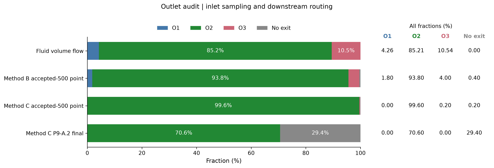
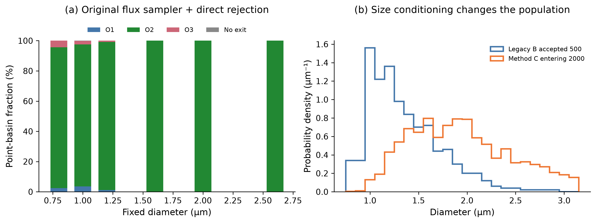

P9-A.2 — Size-first inlet sampling
P9A2_INLET_AUTOMATED_PASS · PENDING_USER_REVIEW
中文审核报告 · 机器汇总 · 复现
消除了 Method B 尺寸重试机制；O2 的有限尺寸几何偏向仍然存在。
01_diameter_distributions
PDF
02_inlet_positions
PDF
03_point_basin_comparison
PDF
04_position_proposals
PDF
05_global_source_size_rejection
PDF
06_routing_stages
PDF
07_finite_size_basin_explanation
PDF